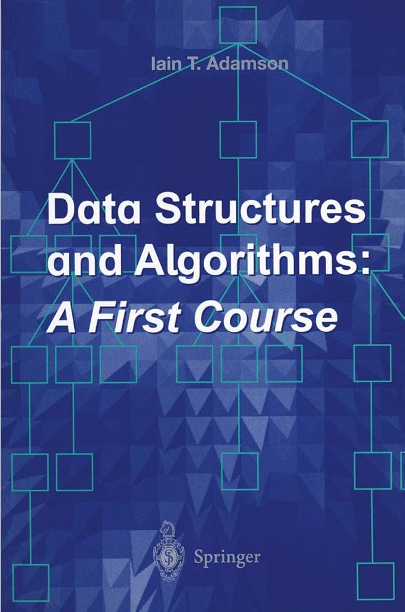
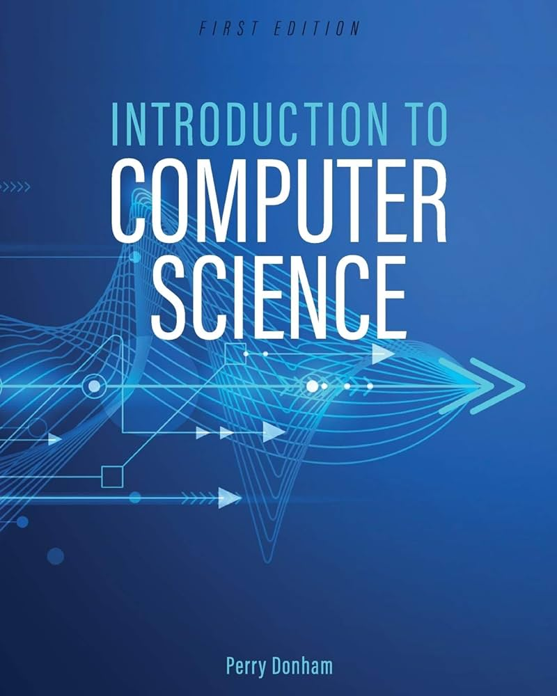
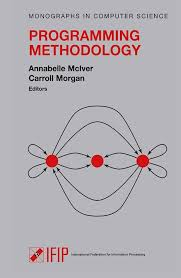

Our leading edge programs offer practical connections at every step, balancing classroom theory and ahnds-on learning to produce confident, knowledgeable, and skilled professionals.
The Computer Systems Technology certificate program introduces students to the fundamentals of computing. In addition to a comprehensive overview of the hardware and software components, students will explore the core functions of computer systems, programming principles, operating system concepts, data processing, storage, and communication.
The Computer Systems Technology program gives students the knowledge to combine extensive software development and hardware skills in addition to strengthening their problem-solving capabilities. After completing their studies, graduates will be observant, detail-oriented, and tenacious in their pursuit of solutions. In year two, students have several options and can take courses that interest them. These include computer graphics and image processing, digital hardware, data communications, and networking. Hardware facilities include a dedicated circuit design and robotics lab, a data communications and networking lab, and six general-access computer labs.
The Bachelor of Computing Science program gives learners a solid foundation in the technical, communication and hands-on skills needed to excel as a computing science professional. Explore a myriad of areas, including gaming, networking and communications, big data, cloud computing, database development, artificial intelligence, robotics, graphics, and mobile applications. Virtually every industry in the world makes use of computer technology and computing science graduates are essential in developing the applications that drive those industries forward. If you enjoy problem-solving, are motivated by constant challenges, thrive working in creative and dynamic environments, and get a kick from collaborating with teams, then computing science is the career for you.

Elemetary Data Structures

Introdution to Computing Science

Practical Programming Methodology
Introduction to Applied Statistics I